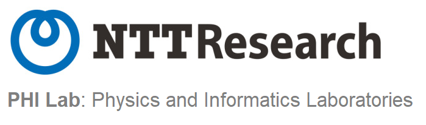
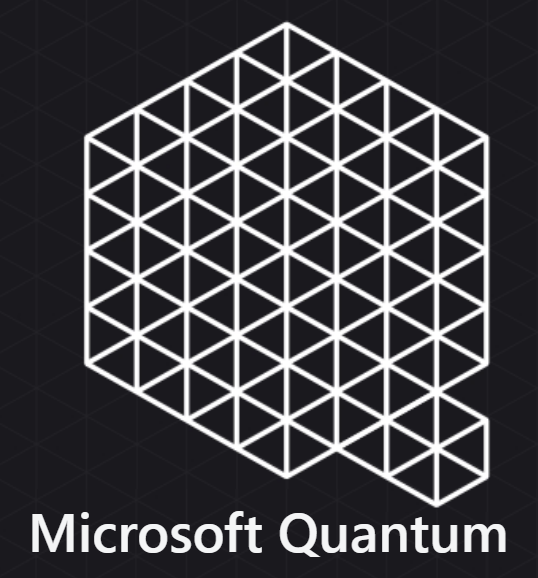
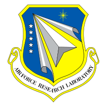
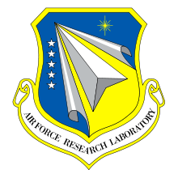
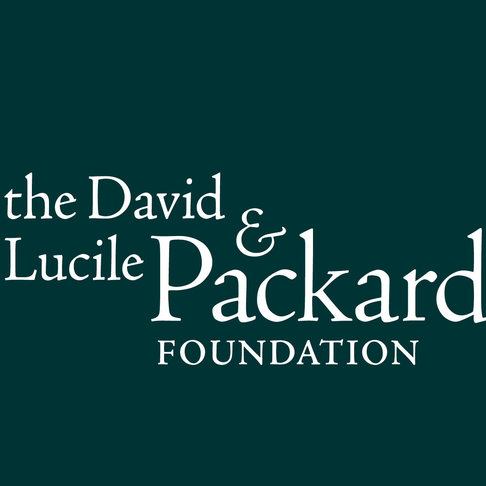
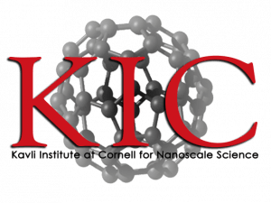
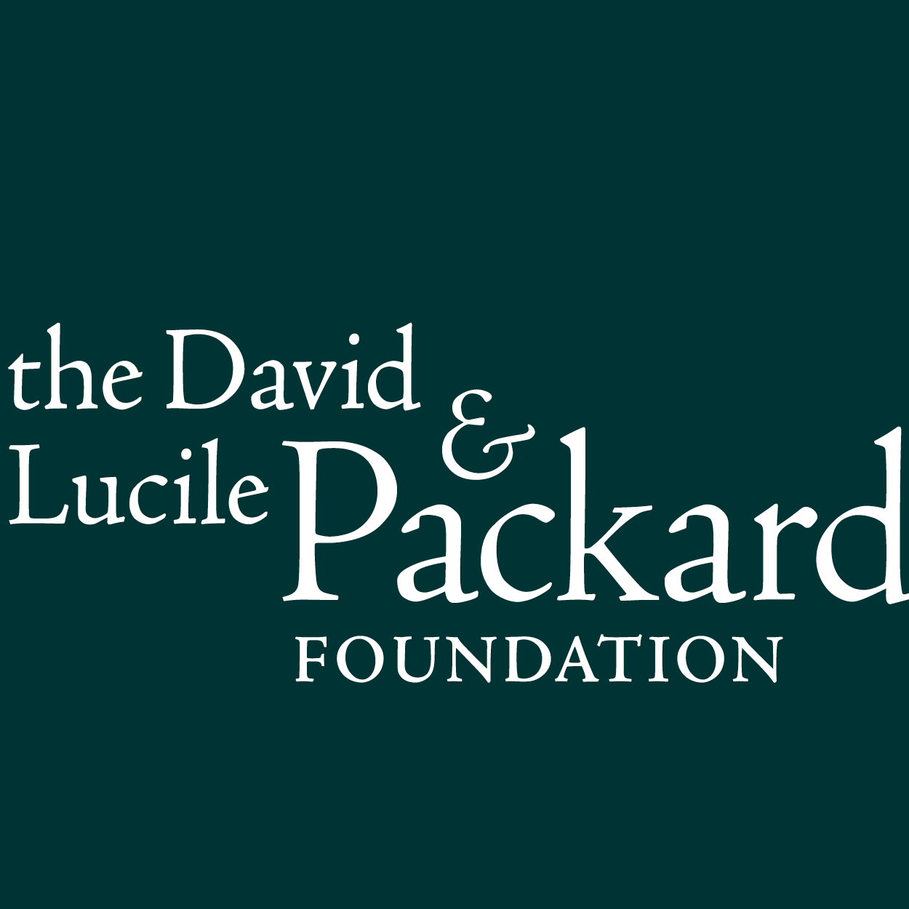
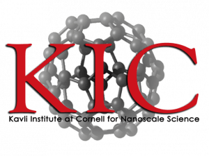

The McMahon Lab is in the School of Applied and Engineering Physics at Cornell University. We research the physics of computation, and how physical systems can be engineered to perform computation in new ways that provide benefits over current CMOS-based von Neumann processors. We have a particular emphasis on quantum computation, but we also explore other candidate future computing technologies that are classical, including photonic computing and neuromorphic computing.
We are interested in multiple different physical platforms for quantum information processing, including spins in semiconductor devices, superconducting circuits, and quantum-optical systems. Each of these approaches to building quantum technologies has advantages and disadvantages, and we explore the fundamental physical limits of each, as well as work on pushing the experimental state-of-the-art. Besides working on building quantum computing and communication hardware in our experimental lab, we are also interested in studying the uses of quantum computers in the near term (noisy, intermediate-scale machines) and in the long term (fault-tolerant machines). We would like to learn if or how quantum computers can deliver benefits in the realms of optimization, quantum simulation, and machine learning. Quantum simulation was Feynman’s original motivation for proposing quantum computation, and it remains today one of the most promising potential uses of quantum computers, both with analog quantum simulators and with digital quantum simulations performed on universal circuit-model quantum computers. Quantum simulators should allow the study of the world of strongly correlated systems (for example, in quantum chemistry and in condensed-matter physics), and will hopefully lead to new physical insight and engineering capabilities in much the same way as the development of conventional computational physics did. Our explorations of classical unconventional computing technologies are also driven by a curiosity about how computations in the real world can potentially be impacted by them, with optimization and machine learning as focus areas.
Please feel free to contact us if you're interested in working with us, be it as a student, a postdoctoral researcher, or as a collaborator.
We are grateful to receive financial support from and/or to collaborate with the following organizations:
  

 


